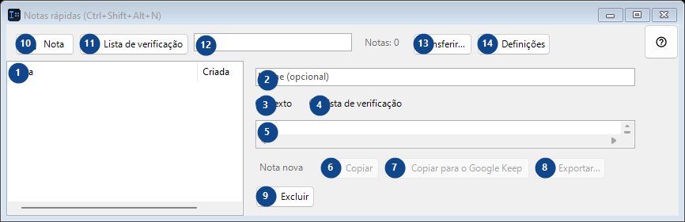
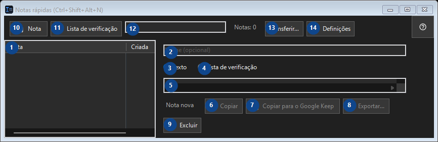

Notas rápidas (Ctrl+Shift+Alt+N)
Para que serve
Um pequeno bloco de notas local: abra com um atalho, jogue lá um trecho de código ou uma ideia, feche.


Ordem de utilização
Leia as explicações numeradas, escolha os valores necessários e continue com o comando da janela.
Elementos
1. Elementos
Esta área mostra o conteúdo ou estado atual. Selecione uma entrada para trabalhar com ela. Nota / Criada
Os seus atalhos2. Escolha ou introduza o valor da etiqueta adjacente. Verifique-o antes de continuar.
Escolha ou introduza o valor da etiqueta adjacente. Verifique-o antes de continuar.
Os seus atalhos3. Texto
Use este comando para a ação indicada. Leia qualquer confirmação antes de aceitar.
Os seus atalhos4. Lista de verificação
Use este comando para a ação indicada. Leia qualquer confirmação antes de aceitar.
Os seus atalhos5. Escolha ou introduza o valor da etiqueta adjacente. Verifique-o antes de continuar.
Escolha ou introduza o valor da etiqueta adjacente. Verifique-o antes de continuar.
Os seus atalhos6. Copiar
Use este comando para a ação indicada. Leia qualquer confirmação antes de aceitar. Este elemento não está disponível. Ative primeiro a função ou selecione uma entrada.
Os seus atalhos7. Copiar para o Google Keep
Use este comando para a ação indicada. Leia qualquer confirmação antes de aceitar. Este elemento não está disponível. Ative primeiro a função ou selecione uma entrada.
Os seus atalhos8. Exportar...
Use este comando para a ação indicada. Leia qualquer confirmação antes de aceitar. Este elemento não está disponível. Ative primeiro a função ou selecione uma entrada.
Os seus atalhos9. Excluir
Use este comando para a ação indicada. Leia qualquer confirmação antes de aceitar.
Os seus atalhos10. Nota
Use este comando para a ação indicada. Leia qualquer confirmação antes de aceitar.
Os seus atalhos11. Lista de verificação
Use este comando para a ação indicada. Leia qualquer confirmação antes de aceitar.
Os seus atalhos12. Notas: 0
Escolha ou introduza o valor da etiqueta adjacente. Verifique-o antes de continuar.
Os seus atalhos13. Transferir...
Use este comando para a ação indicada. Leia qualquer confirmação antes de aceitar.
Os seus atalhos14. Definições
Use este comando para a ação indicada. Leia qualquer confirmação antes de aceitar.
Os seus atalhos